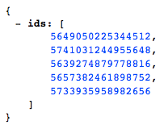

Send via GET
Peering into our myApp folder reveals a lot of files you will not be worrying about. Open up www and find something more familiar - HTML, Angular and CSS. This looks more like an Angular app.
The most interesting things are happening in app.js, controllers.js and the HTML template files in the templates folder. We will take a walk through a project for this class, an app for putting students in line to meet with a teacher. You can clone the repo and follow along here, but make sure to emulate with this repo - it does not work properly with ionic serve --lab because it has mobile only features enabled.
app.js
Scroll down passed the run() function and have a look at the config section. Here we find the routes for our application, organized with information for the URLs that can take us there, the templates that are rendered, and the controllers that provide logic. At the end of the routes we have a defualt which will fire if no other route exists.

users.html
Now we have an idea of how to make new views and link them together. Take a peek in the templates folder. We can see how the Users view will be rendered in users.html:
Notice we are looping through users, are calling a function to delete a given user, and we have a link to a new screen to add a user. This screen renders like this if we run
ionic serve --labcontrollers.js
How to we get our users? We are making a call to an API using $http. We can see the actual code in our UsersCtrl (defined in app.js) to see where exactly we are calling and how we are parsing the received JSON into something our template can display. We pass the array at line 68, labeled "for UI".
The API returns data in this format:
Next, let's look at our delete function and our add user form with an HTTP PUT request.
Next